EMNLP 2026
CoVer: Conflict-Aware Claim Verification
Shuning Zhang*, Dai Shi*, Bohao Chu, Hui Wang, Yuwei Chuai, Yifan Wang, Jingruo Chen, Simin Li, Xin Yi, Hewu Li
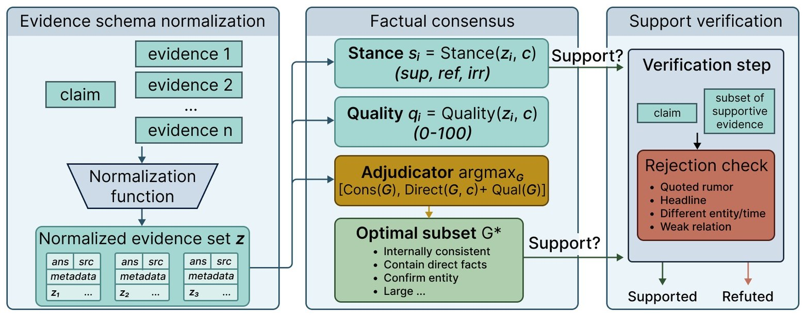
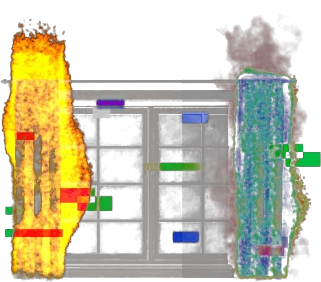
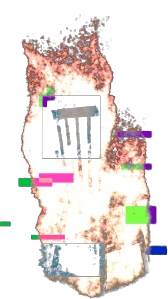
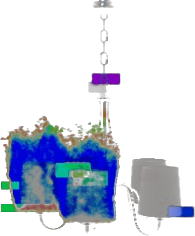
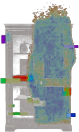
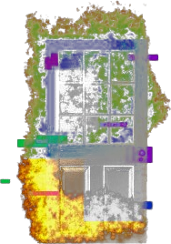
Dai Shi studies how AI might understand what a person feels, intends and remembers — and earn the trust to act on it.
I am a graduate student in Human–Computer Interaction at Tongji University, advised by Prof. Qi Wang. I work towards proactive AI — assistants that help before they are asked. Such an assistant has to get two things right at once: it must read a person correctly, and what it offers must deserve to be believed. Get the first wrong and help becomes intrusion; get the second wrong and it becomes misdirection.
My research treats these as one problem. On the side of understanding, I build egocentric datasets, benchmarks and models that let multimodal systems reason about a user’s intentions, emotions and memories from first-person and wearable signals (EgoIntrospect, EgoX-Interact). On the side of trust, I study how language models and people verify claims when evidence conflicts (CoVer, CANote, Community Notes on X), and how interfaces can quietly deceive the very users who depend on them — screen-reader users facing dark patterns, blind students learning through tactile displays. Across both, the question is the same: when a machine stands between a person and the world, how does it perceive them faithfully and inform them honestly?
I trained as an industrial designer at Hunan University (rank 1/94) and still keep a practice in design & art — installations and interfaces where these questions first surfaced for me, before I had the methods to study them. I have also worked on applied multimodal AI at Tencent and ByteDance.
I am looking for PhD positions starting in 2027.

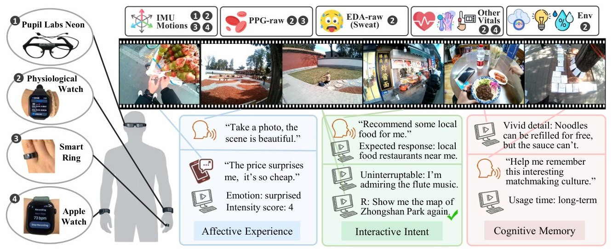
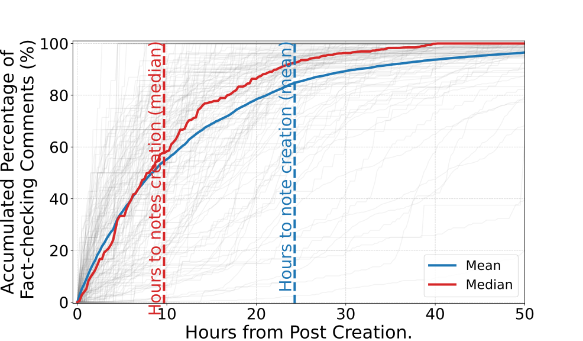
A cross-device, cross-scenario egocentric interaction dataset with a semi-automated collection and annotation platform, and a foundation model for 5+ first-person tasks.
Interaction design and evaluation with 50+ visually impaired participants; built for a China Disabled Persons’ Federation affiliate and now used in classrooms for visually impaired students. Published in Zhuangshi (2025).
Behavioural logging, intent taxonomy and online evaluation for a production conversational assistant.
Multimodal retrieval and ranking, style-alignment SFT, multi-agent tutoring with LLM-as-Judge evaluation.
CoT distillation data, a video-understanding benchmark, and GUI-agent trajectories with reward modelling.
Human-factors study of 10 core gestures; results adopted into the ColorOS universal design standard.
Before I had research methods, I had a design and art practice — and I have kept it. The two pieces here are where the questions in my research first took shape. Threshold Feeling asks how an atmosphere is sensed before it can be named, the same gap between what a person feels and what they can say that my egocentric work tries to close. The satellite-operations interface asks when an operator should act on an AI’s suggestion under pressure, a small first encounter with the problem of trust in proactive systems.
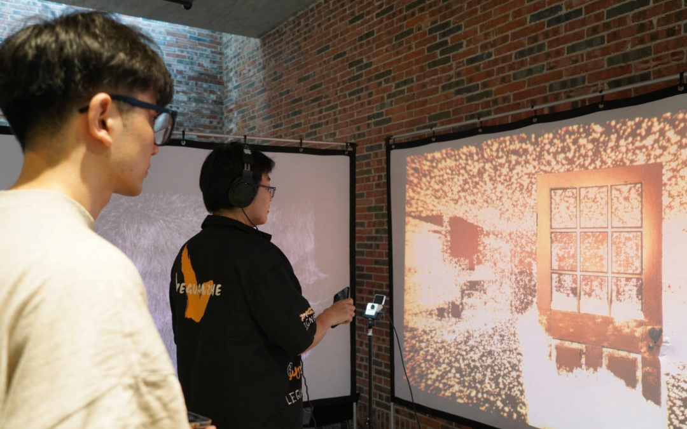
Some of what shapes our mood barely registers: the air on a station platform we stepped out onto by chance, a stranger’s expression, a book found without looking. Made under the theme of emergency, Threshold Feeling tries to give these near-imperceptible atmospheres a body — rendering everyday objects as drifting fields of points that visitors approach and disturb.
The fragments floating across this page are taken from the project.
→ Research thread: internal states that resist being put into words.
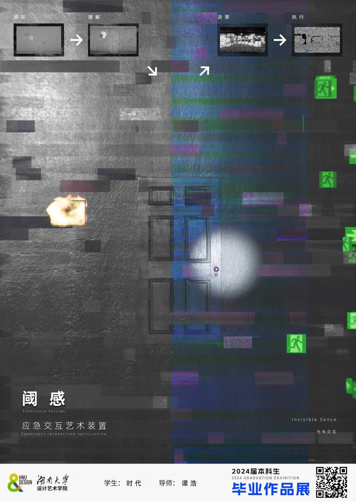
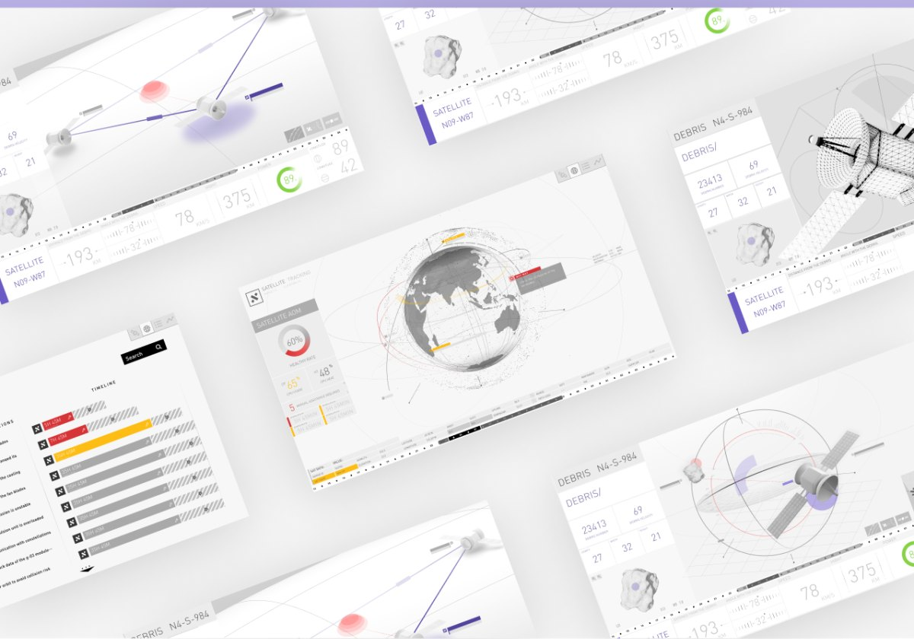
An AI-assisted operations system for a communication-satellite network, designed around an emergency collision-avoidance scenario. The system monitors satellite states, flags anomalies and drafts operation reports; operators work through a three-level digital-twin interface — constellation, single satellite, and satellite-plus-debris — to inspect telemetry and command orbit changes.
Starting from unfamiliar territory, we read into satellite operations, mapped the operator’s journey and interaction motives, and iterated on three views that differ in scale but share one logic.
→ Research thread: calibrated trust between a person and an assistant that acts first.
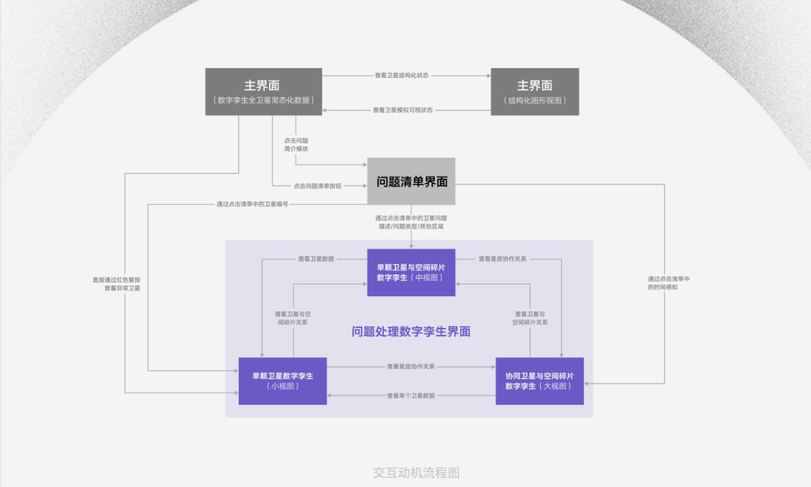
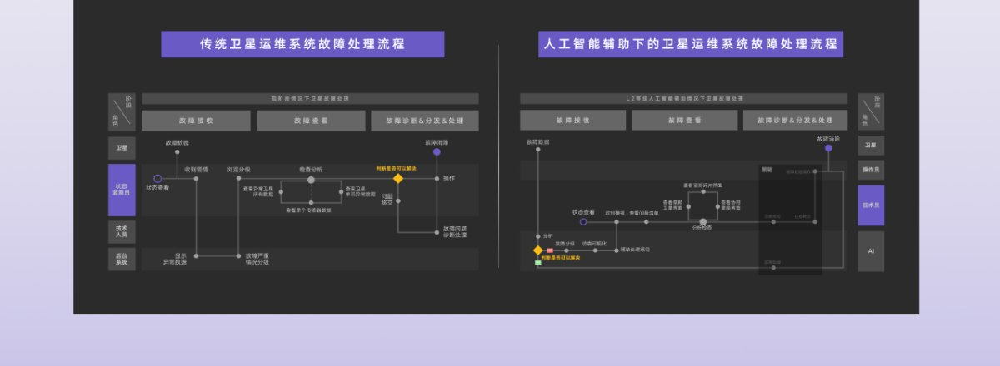